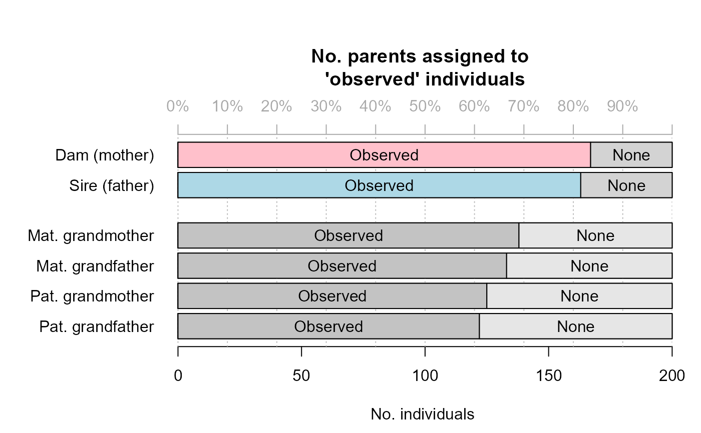
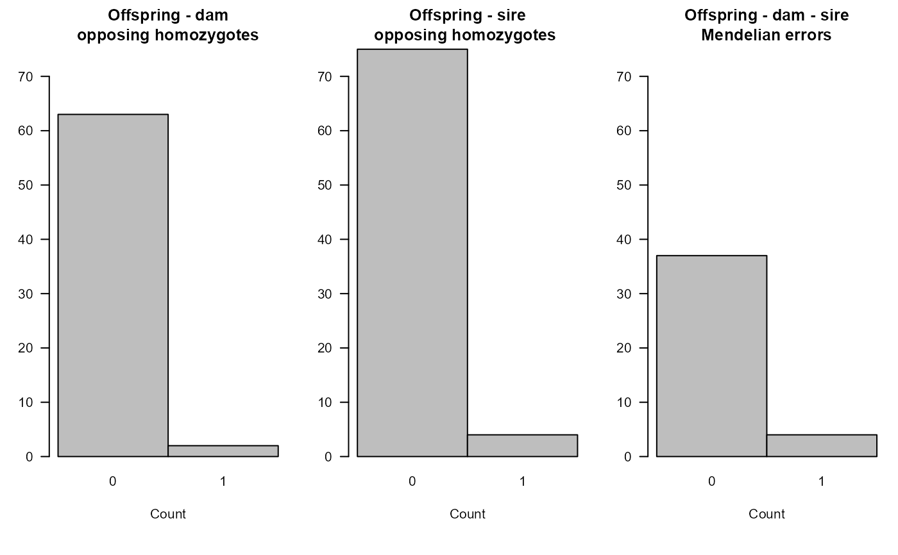
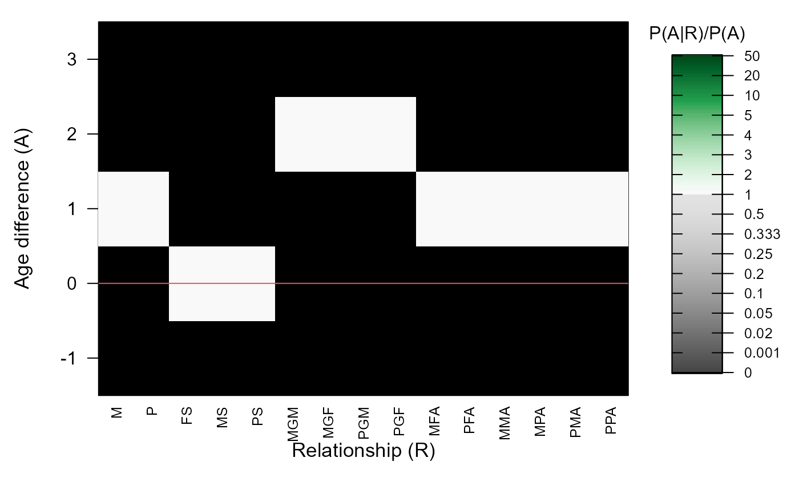

Summarise Sequoia Output or Pedigree
SummarySeq.RdNumber of assigned parents and grandparents and sibship sizes, split by genotyped, dummy, and 'observed'.
SummarySeq( SeqList = NULL, Pedigree = NULL, DumPrefix = c("F0", "M0"), SNPd = NULL, Plot = TRUE, Panels = "all" )
Arguments
| SeqList | the list returned by |
|---|---|
| Pedigree | dataframe, pedigree with the first three columns being id - dam - sire. Column names are ignored, as are additional columns. |
| DumPrefix | character vector of length 2 with prefixes for dummy dams
(mothers) and sires (fathers). Will be read from |
| SNPd | character vector with ids of SNP genotyped individuals. Only when
|
| Plot | show barplots and histograms of the results, as well as of the parental LLRs, Mendelian errors, and agepriors, if present. |
| Panels | character vector with panel(s) to plot. Choose from 'all', 'G.parents' (parents of genotyped individuals), 'D.parents' (parents of dummy individuals), 'sibships' (distribution of sibship sizes), 'LLR' (log10-likelihood ratio parent/otherwise related), 'OH' (count of opposite homozygote SNPs). |
Value
A list with the following elements:
a 2-column matrix with basic summary statistics, similar
to what used to be returned by Pedantics' pedStatSummary (now
archived on CRAN). First column refers to the complete pedigree, second
column to SNP-genotyped individuals only. Maternal siblings sharing a dummy
parent are counted in the 2nd column if both sibs are genotyped, but not if
one of the sibs is a dummy individual.
a 2x3x2x4 array with the number of assigned parents, split by D1: genotyped vs dummy individuals; D2: female, male and unknown-sex individuals; D3: dams vs sires; D4: genotyped, dummy, observed vs no parent
a 2x4x4 array with the number of assigned grandparents, split by D1: genotyped vs dummy individuals; D2 Maternal grandmother (MGM), maternal grandfather (MGF), paternal grandmother (PGM), paternal grandfather (PGF); D3: genotyped, dummy, observed vs no grandparent
a list with as first element a table of maternal sibship sizes, and as second element a table of paternal sibship sizes. Each table is a matrix with a number of rows equal to the maximum sibship size, and 3 columns, splitting by the type of parent: genotyped, dummy, or observed.
See also
sequoia for pedigree reconstruction and links to other
functions.
Examples
# \donttest{ data(SimGeno_example, LH_HSg5, package="sequoia") SeqOUT <- sequoia(GenoM = SimGeno_example, LifeHistData = LH_HSg5, Module="ped")#>#>#> #>#> #>#> Parentage ... #> Initial total LL : #> [1] -18301.9 #> Post-parentage total LL : #> [1] -13795.2 #> Estimating birth years ... #> Calculating parental LLR ...#>#>#> #>#> Sibships - Initial Total LL : #> [1] -13795.2 #> Round 01 end, Total LogLik; time (sec): #> [1] -1.25634e+04 9.21875e-01 #> No. dams, sires for real indiv.: #> [1] 178 180 #> Round 02 end, Total LogLik; time (sec): #> [1] -1.25634e+04 1.71875e-01 #> No. dams, sires for real indiv.: #> [1] 178 180 #> Round 03 end, Total LogLik; time (sec): #> [1] -1.25634e+04 2.03125e-01 #> No. dams, sires for real indiv.: #> [1] 178 180 #> Estimating birth years ... #> Calculating parental LLR ...#>Ped_example <- SeqOUT[["Pedigree"]] Ped_example$dam[1:20] <- paste0("Mum", 1:20) # some fake field mums PedSum1 <- SummarySeq(SeqOUT, Pedigree=Ped_example, Panels="G.parents")#> Length Class Mode #> PedSummary 24 -none- numeric #> ParentCount 48 -none- numeric #> GPCount 48 -none- numeric #> SibSize 3 -none- listPedSum1$PedSummary#> All SNPd #> records 244 214 #> maternities 198 122 #> paternities 180 168 #> full sibs 263 263 #> maternal half sib 292 292 #> paternal half sibs 665 665 #> maternal grandmothers 122 122 #> maternal grandfathers 0 0 #> paternal grandmothers 36 36 #> paternal grandfathers 0 0 #> maximum pedigree depth 2 1 #> founders 43 37# }